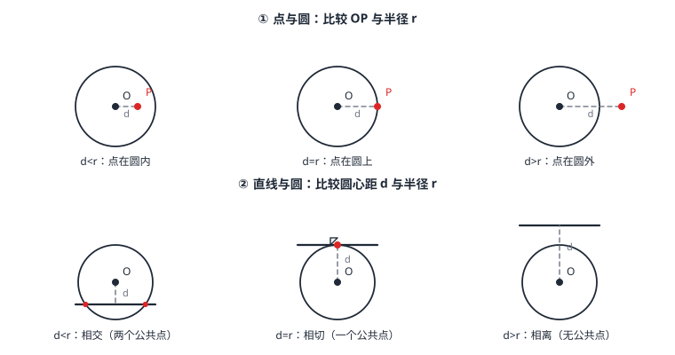

点、直线与圆的位置关系
圆是「距离的王国」，位置关系全靠一个比较：点与圆看 OP 与 R（内、上、外）；直线与圆看圆心到直线的距离 d 与 R（相交、相切、相离）。作圆的谜底也在这里：过一点、两点都有无数个圆，过不共线的三点恰好一个——圆心是三边垂直平分线的交点（外心）。直角三角形的外心有个漂亮结论：就在斜边中点，外接圆半径是斜边的一半。
| 所属主题 | 圆 |
|---|---|
| 所属模块 | 几何 |
| 课标学段 | 第四学段（7~9 年级） |
| 前置知识 | 圆的概念与垂径定理、尺规作图、矩形、菱形、正方形 |
| 核心素养 | 几何直观推理能力运算能力 |
教材定位
人民教育出版社《人教版（2024版）义务教育教科书·数学》
九年级上册第30章 直线与圆的位置关系30.1 直线与圆
对应九上 30.1：直线与圆相离、相切、相交。「过三点的圆」与外心的内容教材未单列，本篇放在此处一并讲清。
说明
点与圆三种位置（R 为半径，d=OP 为点到圆心距离）：d<R 点在圆内；d=R 点在圆上；d>R 点在圆外（图 1 左）。这是「圆 = 到定点等距的点集」（圆的概念与垂径定理）的直接推论——位置判断就是一个不等式。
直线与圆三种位置：设 d 为圆心到直线的距离。d<R 相交（两个公共点）；d=R 相切（唯一公共点，叫切点）；d>R 相离（无公共点）（图 1 右）。公共点个数与 d、R 的大小关系一一对应——「位置问题」从此变成「计算问题」。
过几点能作圆：过一点、过两点都有无数个圆（圆心可在相应范围内任选）；过不在同一直线上的三点，恰好能作一个圆——圆心是三边垂直平分线的交点，这个圆叫三角形的外接圆，圆心叫外心。共线三点作不出圆（找不到到三点等距的点）。相切这条直线的判定与性质是下一篇（切线的判定与切线长定理）的主角——这里先把「相切 \Leftrightarrow d=R」的位置事实备好。
使用场景
台风大风圈与航线：台风大风区是以台风中心为圆心、大风半径 R 的圆，船位到中心的距离与 R 一比，进没进大风区立刻分明（点与圆）。
圆形隧道检修轨道：隧道断面是圆，检修轨道线是直线——轨道离圆心多远，决定它嵌进断面多宽（直线与圆，配垂径定理算弦长）。
注意点
「过三点作一个圆」必须补一句「不共线」——共线三点无圆可作，这是条件的边界。
外心是三边垂直平分线的交点，不是角平分线的交点——角平分线交点当圆心的那类与三边相切的圆，切线的判定与切线长定理 再见。
相切要转化成 d=R 再算，别只数公共点：图形上看着「贴着」不等于相切，算出来 d=R 才算数。
三角形的形状决定外心位置：锐角三角形外心在形内、直角三角形外心是斜边中点、钝角三角形外心在形外——位置随形走，不是总在内部。
证明

图 1：左——点与圆的三种位置，比较 OP 与半径；右——直线与圆的三种位置，比较圆心到直线的距离 d 与半径 r（相切时 d=r，切点处半径与直线垂直）
证明
结论 1过不共线三点可以作且只能作一个圆。
过不共线三点作圆的圆心必须到三点等距。到 A、B 等距的点在线段 AB 的垂直平分线上（尺规作图），到 B、C 等距的在 BC 的垂直平分线上——圆心只能在这两条线的交点处。不共线时两条垂直平分线必相交于一点 O，且 O 到 A、B、C 等距，以 OA 为半径的圆同时过三点；交点唯一，所以圆唯一。
关键一步依据是「到线段两端等距的点都在这条线段的垂直平分线上」：圆心必须同时落在 AB 与 BC 的两条垂直平分线上，而两条直线至多一个交点，圆心因此被唯一钉住——圆存在且唯一这两件事，是由交点唯一性一起给出的。
结论 2三点共线则作不出圆。
共线三点无解：设三点共线，若有圆心 O 到三点等距，则 O 在每两点连线的垂直平分线上——而这些连线是同一条直线，它的垂直平分线彼此平行，没有交点，矛盾。
关键一步依据是平行线没有交点：三点共线时，两两连线是同一条直线，它们的垂直平分线是同一族平行线，不可能有公共点，圆心根本不存在。
结论 3直线与圆的位置关系由圆心到直线的距离 d 与半径 R 的大小决定：d>R 相离、d=R 相切、d<R 相交。
直线与圆的数量刻画：圆心 O 到直线 l 的垂线段长为 d（垂足 H）。\odot O 上各点到 O 距离都是 R：若 d>R，则 l 上离 O 最近的点 H 都已在圆外，无公共点；d=R 时最近点恰好落在圆上，其余点全在圆外，唯一公共点；d<R 时 H 在圆内，而 l 伸向无穷远必穿出圆，与圆交于两点（垂径定理保证弦长 2\sqrtR^2-d^2，圆的概念与垂径定理）。
关键一步依据是「圆上各点到圆心的距离都等于半径」这一条：直线上离 O 最近的点就是垂足 H，它的距离 d 与 R 一比，公共点的个数就定了——H 在圆外则一个公共点都没有，H 恰在圆上则只有一个，H 在圆内则直线两端都会伸出圆外、交于两点。
动手实验
三枚图钉按不共线钉在软木板上，一根绳子套住三枚图钉，用笔绷紧绳子绕一圈——画出过三点的圆；把图钉挪成共线再试，绳子怎么绷都画不出闭合圆。再用直尺贴着一只圆形瓶盖移动：尺边与瓶盖轮廓从「两个交点」滑到「恰好一个」再到「零个」，同时观察圆心到尺边的距离从小于半径、等于半径变成大于半径。
解题思路
位置判断三板斧：①设未知量（d 与 R）；②算 d（点到圆心距离或圆心到直线距离）；③比大小下结论。全程代数化，不靠目测。
外心操作：作任意两边的垂直平分线，交点即外心（第三边的垂直平分线自动经过它）。直角三角形免作图：外心就是斜边中点，半径 =\tfrac12 斜边（直角斜边中线推论，矩形、菱形、正方形）。
直线截圆求弦长：位置是相交（d<R）后，接垂径定理四量关系 R^2=d^2+(a/2)^2——「位置判断 + 长度计算」一条流水线（例 3）。
按场景的例题
例 1（场景：物理情境） 台风大风圈预警
台风中心为 O，大风区半径 300 千米。甲船测得距台风中心 280 千米，乙船距中心 350 千米。两船是否在大风区内？
解：点与圆位置比较 d 与 R=300：甲船 d=280<300，在圆内，处于大风区；乙船 d=350>300，在圆外，暂不受影响。
答：甲船在大风区内（280<300），乙船在大风区外（350>300）。
例 2（场景：图形设计） 直角三角形零件嵌圆盘
边长为 6、8、10 的直角三角形零件，要求嵌入圆盘（三个顶点都在圆盘边缘）。圆盘半径最小是多少？圆心在哪里？
解：三顶点共圆即求外接圆。斜边 10（6^2+8^2=10^2），直角三角形的外心是斜边中点，外接圆半径 =\tfrac12× 10=5。圆心装在斜边中点处，半径 5。
答：最小圆盘半径 5，圆心在斜边中点（直角三角形外接圆的特有便利）。
例 3（场景：测量与工程） 隧道断面检修轨道
圆形隧道断面半径 5 米，一条检修轨道线画在断面内、距圆心 3 米处。轨道与断面圆的位置关系如何？轨道可通行的最大净宽（弦长）是多少？
解：圆心到轨道线距离 d=3<R=5，相交。垂径定理：\tfraca2=\sqrtR^2-d^2=\sqrt25-9=4，弦长 a=8 米。
答：相交；轨道净宽 2\sqrt5^2-3^2=8 米。
常用推论
外心到三顶点等距，是「到三个点一样远的公平选址」的几何解——现实中「到三村等距的水塔选址」这类问题的模型。
相交时弦长随 d 连续变化：d 从 0（直径，最长 2R）增大到 R（缩成切点，弦长 0）——直线从正中穿过到擦边而过，垂径定理全程供给弦长。
相切是相交的特殊情形：d=R 时两个交点合并成一个点。提前借用一个名字给这条与圆恰好接触的直线——切线，它的判定定理、性质与从圆外引两条切线的结构，正是 切线的判定与切线长定理 的全部内容。
易错点
错过任意三点都能作一个圆。
为什么错漏了「不共线」：共线三点时，各垂直平分线互相平行无交点，不存在等距点。
正确过不在同一直线上的三点，有且只有一个圆。
错圆心到直线的距离 d=4，半径 r=4，直线与圆相交。
为什么错d=R 是相切不是相交——恰好一个公共点。d<R 才是相交（两个公共点）。
正确d=r\Rightarrow 相切；d<r\Rightarrow 相交；d>r\Rightarrow 相离。
错任意三角形的外心都在三角形内部。
为什么错外心位置随三角形形状移动：钝角三角形的外心在形外。
正确锐角在形内、直角在斜边中点、钝角在形外；外心到三顶点距离始终相等。
直观理解
圆的一切位置关系都是一场「拔河」：一边是距离（OP 或 d），一边是半径 R。距离小于半径，被圆吞进；等于，恰好站在边线；大于，圈外。作圆则是「找公平点」：到两个点公平，站在垂直平分线上；到三个点公平，两条公平线一交——外心出炉。直角三角形最特殊：斜边中点天然对三个顶点公平，因为直角顶点看斜边的视角永远是 90^\circ（圆周角定理的回响，圆心角、弧与圆周角定理）。